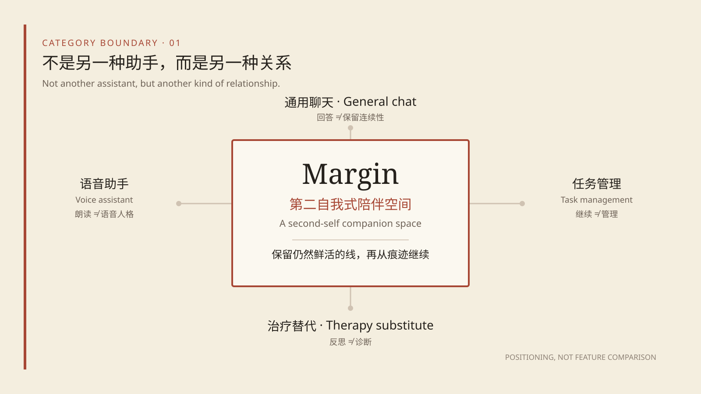
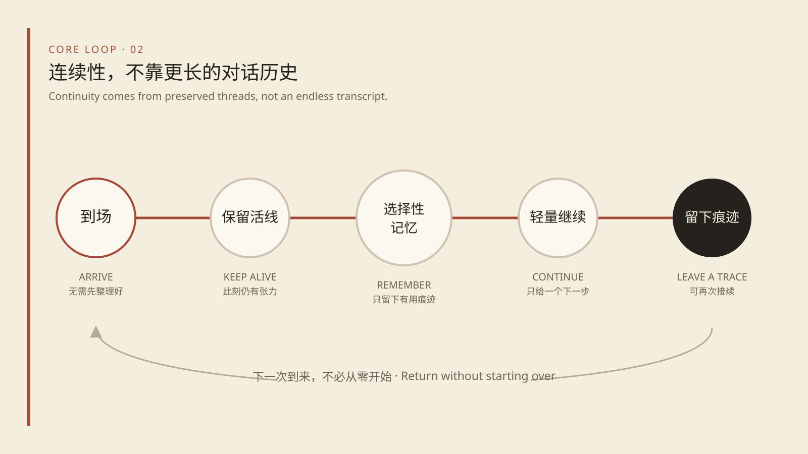
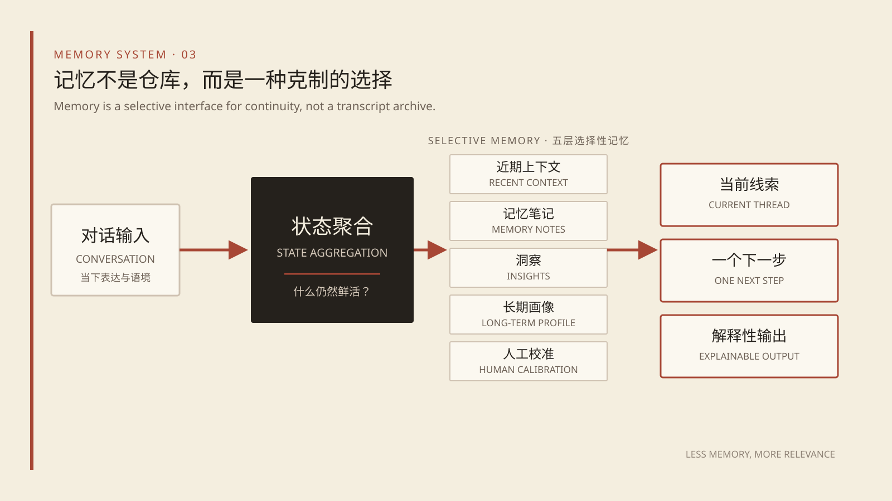
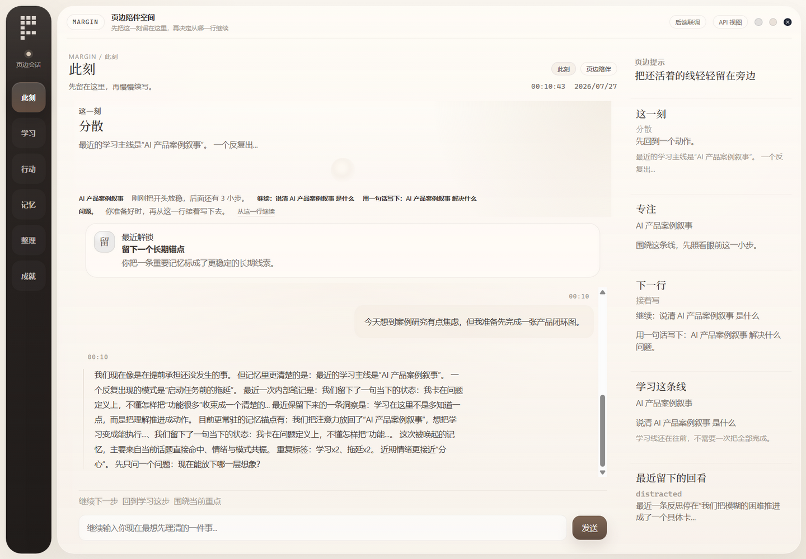
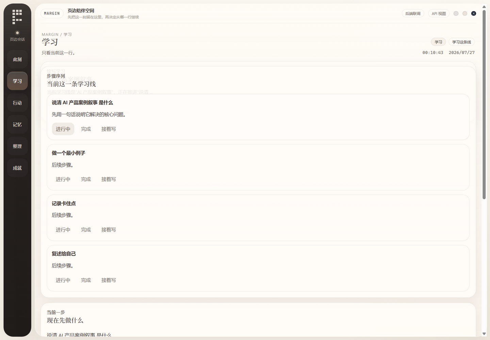
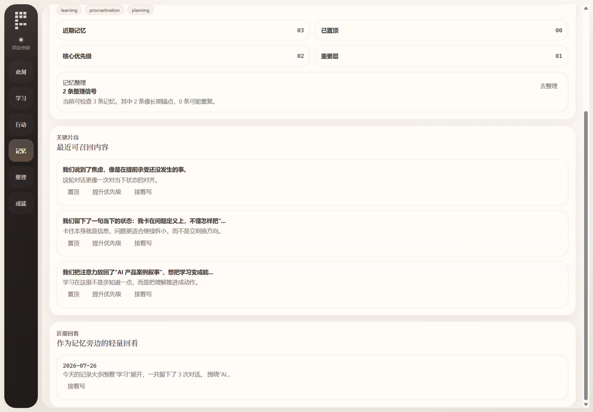
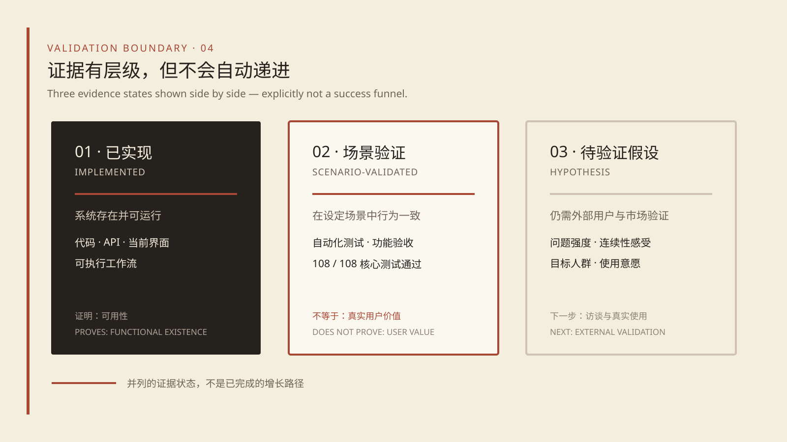

MARGIN / AI PRODUCT CASE STUDY
An independent AI product case study that turns an ambiguous human need into product behavior, boundaries, and a working system loop
Independent AI Product Manager / Product Design and Implementation · 2026
MARGIN / AI PRODUCT CASE STUDY
Chapter takeaway: I independently turned a broad idea for an AI companion into a coherent product position, a set of behavioral rules, and a functional MVP. The work proves that the concept can be implemented and tested. It does not prove that the market needs it.
Margin is a personal AI space positioned as a second self: a system that helps a person return to what still matters without first asking them to organize everything into a perfect prompt. Its primary job is not to schedule more work. It receives the user as they are, preserves a small number of relevant threads, and offers a low-pressure way to continue when the user is ready. The central product question is therefore not, “Can the AI answer another request?” It is, “Across several conversations and changing states, what should remain available, and where should the person be able to resume?”
That distinction became a product constraint rather than a tagline. A feature belongs in Margin only when it supports arrival, continuity, selective memory, or reflection. A feature that merely makes the product look more capable is not enough. This rule helped prevent the MVP from becoming an undifferentiated collection of chat, task, memory, and productivity tools. Implemented
MARGIN / AI PRODUCT CASE STUDY
People should not have to arrive organized in order to be understood.
MARGIN / AI PRODUCT CASE STUDY
Chapter takeaway: Margin does not begin with a lack of information. It begins with a mismatch: people may need support most when they have the least capacity to turn their situation into a well-formed request.
The starting observation was personal and qualitative. When people are tired, scattered, avoiding something, or holding several concerns at once, they may only be able to offer half a sentence. They might sense that something is wrong without knowing the desired outcome. They might remember discussing a subject before but resist rebuilding the entire background. They may want to put the moment somewhere before they want a recommendation. Hypothesis
This is not a completed research result or a universal claim about a demographic. It is a founder observation converted into a product opportunity. External research must still determine how often this situation occurs, for whom it matters, and whether an AI product is an appropriate response.
MARGIN / AI PRODUCT CASE STUDY
Chapter takeaway: I reframed the opportunity from “add more AI capabilities” to “create a continuous relationship that is not centered on managing the user.” Four category boundaries kept the product focused.

MARGIN / AI PRODUCT CASE STUDY
Chapter takeaway: Echo becoming Margin was not a naming exercise. It narrowed the product from a collection of useful functions to a relationship that could decide which functions belonged.
The Echo phase already contained conversation, learning, action, memory, and summary capabilities. But having those modules did not create a distinct product. The same set could become a productivity assistant, a study coach, an emotional journal, or a general personal agent. Each module had a plausible reason to exist, yet the product lacked a standard strong enough to reject additional scope. Implemented
Margin changed the central question from “What else can the system do?” to “What deserves to remain in the margin?” Paper, ink, margins, traces, and continuation became more than visual references. They translated the relationship into constraints.
MARGIN / AI PRODUCT CASE STUDY
Chapter takeaway: Five principles turn the position into operating rules. Each resolves a user tension, constrains AI behavior, and changes what belongs in the MVP.
User tension. At the moment support is useful, a person may have only an emotion, an incomplete thought, or a weak signal. If the product immediately asks for a goal or decomposes work, seeking help becomes another assignment.
Product behavior. The conversation first acknowledges the present situation, responds to concrete content and emotional intensity, and then infers whether the person wants to vent, chat, reflect, or move. It offers a small, rejectable next step only when there is an action signal. Implemented
Scope consequence. Now must place expression and the sense of being received before a task queue. The AI cannot convert every message into a plan.
MARGIN / AI PRODUCT CASE STUDY
Chapter takeaway: Margin connects arrival, live-line preservation, selective memory, light continuation, and visible traces so that one conversation can become a relationship across sessions.

MARGIN / AI PRODUCT CASE STUDY
MARGIN / AI PRODUCT CASE STUDY
Chapter takeaway: The MVP includes only the capabilities needed to demonstrate the receive–continue–retain–review loop. It explicitly rejects directions that would turn Margin back into an efficiency tool or a performance of personality.
Together these capabilities answer one MVP question: when someone arrives with ambiguous expression, can the product receive the moment, preserve one relevant line, return useful context later, and offer review without pressure?
MARGIN / AI PRODUCT CASE STUDY
MARGIN / AI PRODUCT CASE STUDY
Chapter takeaway: The system is designed around stable product behavior: how to form the present, why to return a particular thread, and how to remain useful when information or model capability is insufficient.
Each page does not independently guess the current priority. The system aggregates current_action, current_learning, current_reflection, and current_memory into a consistent continuation entry. Implemented
MARGIN / AI PRODUCT CASE STUDY
Chapter takeaway: The system is designed around stable product behavior: how to form the present, why to return a particular thread, and how to remain useful when information or model capability is insufficient.

MARGIN / AI PRODUCT CASE STUDY
Chapter takeaway: Margin’s visual language is not a warm skin on generic AI. Paper, ink, margins, traces, and low-pressure interaction make “receive first, continue second” visible in the interface.
Paper creates a sense of holding. A warm, low-contrast field feels closer to a place where unfinished material can rest than a cold operations console. Gentle layering can suggest time and accumulation without turning the UI into a literal notebook.
Ink gives language weight. Conversation, the current line, and reflection lead; icons, light effects, and decoration only support reading.
MARGIN / AI PRODUCT CASE STUDY
All screens use an isolated empty database and contain no personal data.



MARGIN / AI PRODUCT CASE STUDY
Chapter takeaway: Current evidence shows that the core logic runs, predefined scenarios connect, and concrete defects can be found. It does not show user value. The next phase must move from testing the system to testing the problem and relationship.
I evaluated first entry, ordinary conversation, learning creation and continuation, a blocked learning step, step completion, suggested and activated actions, daily summary, pinned memory and recall, and the state where text-to-speech is unavailable. Scenario-validated
These scenarios covered the move from blank state to active state, from expression to continuity, and from the normal path to capability absence. They show that major modules can hand state to one another instead of working only as separate demos.
MARGIN / AI PRODUCT CASE STUDY
Implementation, scenario validation, and user value are not the same thing.

MARGIN / AI PRODUCT CASE STUDY
Chapter takeaway: Current evidence shows that the core logic runs, predefined scenarios connect, and concrete defects can be found. It does not show user value. The next phase must move from testing the system to testing the problem and relationship.
I evaluated first entry, ordinary conversation, learning creation and continuation, a blocked learning step, step completion, suggested and activated actions, daily summary, pinned memory and recall, and the state where text-to-speech is unavailable. Scenario-validated
These scenarios covered the move from blank state to active state, from expression to continuity, and from the normal path to capability absence. They show that major modules can hand state to one another instead of working only as separate demos.
Leave a place first. Continue from the trace.